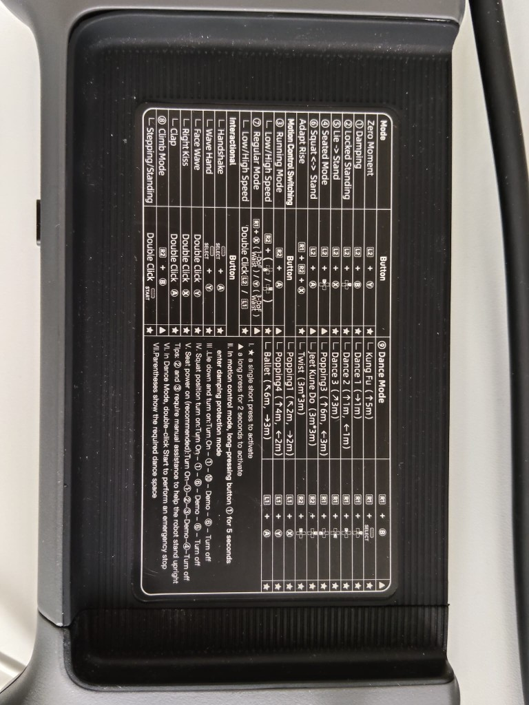

Varianti G1 EDU (U1–U10)
Codici listino Unitree — la differenza tra modelli è la base meccanica (23 o 29 DoF) e il manipolatore montato.
| SKU | DoF | Manipolatore | Scheda |
|---|---|---|---|
| G1 Air | 23 | Dummy (non EDU) | Air |
| G1-U1 | 23 | Mani dummy, Jetson Orin NX | U1 |
| G1-U2 | 29 | Dummy + vita 3 DoF + braccio 7 DoF | U2 |
| G1-U3 | 43 | Dex3-1 tre dita, senza tattile | U3 |
| G1-U4 | 43 | Dex3-1 tre dita, con tattile | U4 |
| G1-U5 | — | Inspire RH56DFQ, senza tattile | U5 |
| G1-U6 | — | Inspire RH56DFTP, con tattile | U6 |
| G1-U7 | 37 | Revo2 Basic (5 dita) | U7 |
| G1-U9 | 37 | Dex3-1 senza tattile (config. compatta) | U9 |
| G1-U10 | 35 | Revo2 Basic (5 dita) | U10 |
Listino: prezzi Abra.
Protezione fisica del robot
Telecomando R3
Accensione: pressione breve sul pulsante power → tenere premuto ≥2 s (due beep). Spegnimento: breve + lungo ≥2 s (tre beep).
Telecomando incluso o acquistabile: G1 Remote Controller.
Comandi telecomando (firmware corrente)
Legenda comandi stampata sul telecomando R3:
- ★ = pressione breve singola
- ▲ = pressione lunga ~2 secondi (per alcuni comandi di sicurezza, es. damping, tenere premuto ≥3 secondi)

Zero moment / postura
| Comando | Tasti | Tipo |
|---|---|---|
| Damping | L2 + Y | ★ — smorza i motori |
| Locked standing | L2 + B | ★ — sicurezza: molla/rilascia i giunti. Usala come impostazione di emergenza |
| Alzata da sdraiato | L2 + X | ★ — Lie → Stand (solo pavimento duro, vedi protezione) |
| Seduto | L2 + A | ★ — attesa transizione |
| Squat ↔ stand | L2 + ↑ / ↓ | ★ |
| Adapt rise | R1 + R2 + X | ▲ 2 s |
Motion control
| Modalità | Tasti | Note |
|---|---|---|
| Running mode | R2 + A | ▲ 2 s — corsa/motion aggressivo |
| Velocità bassa/alta (run) | R2 + ↑ / ↓ | ▲ |
| Regular mode (1 DoF vita) | R1 + X | ▲ 2 s — walk mode stabile (G1-U1 / vita 1 DoF) |
| Regular mode (3 DoF vita) | R1 + Y | ▲ 2 s — walk mode stabile (G1-U2+ / vita 3 DoF) |
| Velocità bassa/alta (regular) | Doppio click L2 / L1 | ▲ |
| Stepping / standing | Doppio click START | ▲ |
| Climb mode | R2 + B | ▲ |
Debug mode (solo sviluppo SDK)
L2 + R2 — ferma il motion controller per evitare conflitti con il SDK. Serve solo in lab quando programmi motori a basso livello. Per uso normale con telecomando non entrare in debug: riavvia il G1 per uscire.
Sequenze di accensione consigliate (da sticker)
- Da seduto (consigliata): Accendi → (1) Damping → (2) Locked standing → (3) Running/Regular → demo → (4) Seduto → spegni. Passi (2) e (3) con assistenza manuale alle spalle.
- Da sdraiato: Accendi → (1) → (10) → demo → (6) → spegni.
- Da squat: Accendi → (1) → (6) → demo → (6) → spegni.
Accensione batteria G1
- Inserisci batteria fino al click (interruttore verso il retro).
- Pressione breve sul pulsante → tieni ≥2 s.
- Attendi ~1 min: tutti i giunti in zero torque.
- Segui sequenza telecomando sopra — prima L2+Y damping, poi procedi.
Metodo sospeso al telaio (lab)
Consigliato al primo avvio: telaio di protezione. Sospendi il robot, piedi a terra solo dopo stabilizzazione in Regular mode. Braccia e gambe libere, nessun cavo in tensione.
Metodo da terra (L2+X)
Payload e braccia
Payload nominale braccio ~3 kg, ma operativamente con braccio esteso anche 1 kg può sbilanciare il robot in avanti e destabilizzare la policy di walking. Per saluti e gesture non caricare le braccia.
Rete e SSH
Porta il PC su subnet 192.168.123.0/24 (IP libero, es. .51 — non usare .161, .164, .120).
- Ethernet diretto al porto LAN del G1
- Modulo router Wi‑Fi a bordo — ti connetti via Wi‑Fi o Ethernet al router; utile anche con SIM se vuoi internet mantenendo la subnet robot isolata dal resto del lab
192.168.123.161MCU / motion controller Unitree192.168.123.164Jetson Orin (PC2) — SSH unitree / 123192.168.123.120LiDAR Livox MID-360ping 192.168.123.164
ssh unitree@192.168.123.164
# Password predefinita: 123H2: stessa subnet; tipicamente .161 modulo Unitree, .162 PC Intel, .163 espansione, .164 Jetson — credenziali in scheda consegna.
Problemi frequenti
- Ping non risponde → controlla cavo Ethernet, IP del PC, poi riavvia il robot.
- SSH non entra / lento → sessioni SSH saturate o Jetson saturo → riavvio G1.
- SDK fa tremare le articolazioni → motion controller attivo in parallelo, oppure doppio comando (telecomando + SDK insieme). Entra in debug mode solo per sviluppo, oppure ferma comandi SDK.